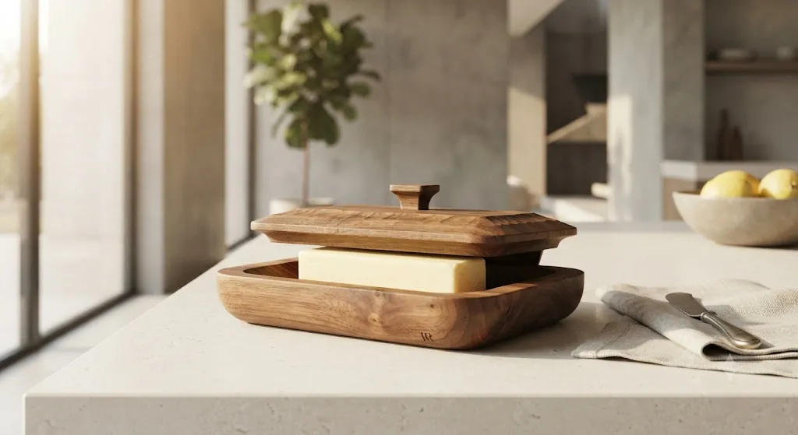

AA-TL-366 · Cat 37
Hand-Carved Wooden Butter Dish with Lid
Handcrafted Farmhouse Table centerpiece table engineered for Anthropologie, Amazon wholesale programs.
$5.20 – $6.80 FOB Mundra · per unit · MOQ 100 Pcs
| Material & construction | Solid hardwood rectangular butter keeper fitting standard 4 oz US butter sticks |
|---|---|
| Dimensions | 7.5" x 4.5" x 3" / 19 x 11 x 8 cm |
| Carton volume | 0.002 CBM / unit |
| Minimum order | 100 Pcs |
| Lead time | 45–60 Days (FOB Mundra) |
| Western retail benchmark | $28 – $38 |
| Style | Farmhouse Table |
| Indicative HS heading | 4419.19 — Wooden kitchenware / tableware |
| Typical buyers | Anthropologie, Amazon |
Indicative HS heading only — your customs broker confirms final classification. Kiln-dried 8–10% moisture, ISPM-15 dunnage, VRIKSH / Lacey / EUDR paperwork on request.